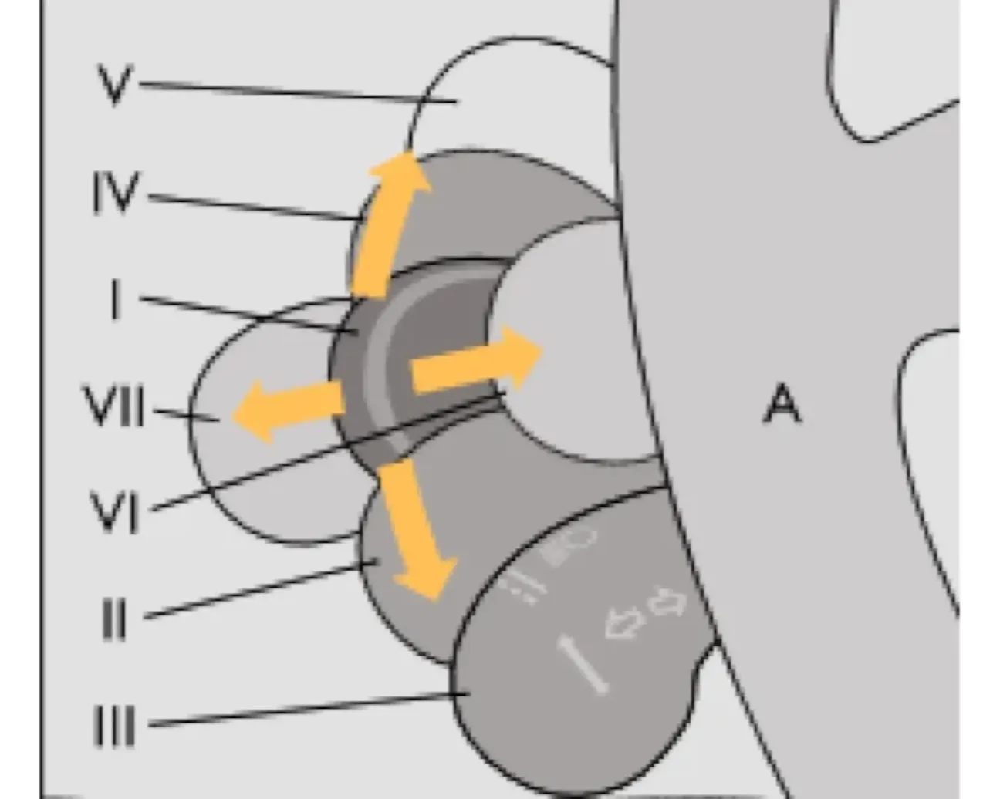
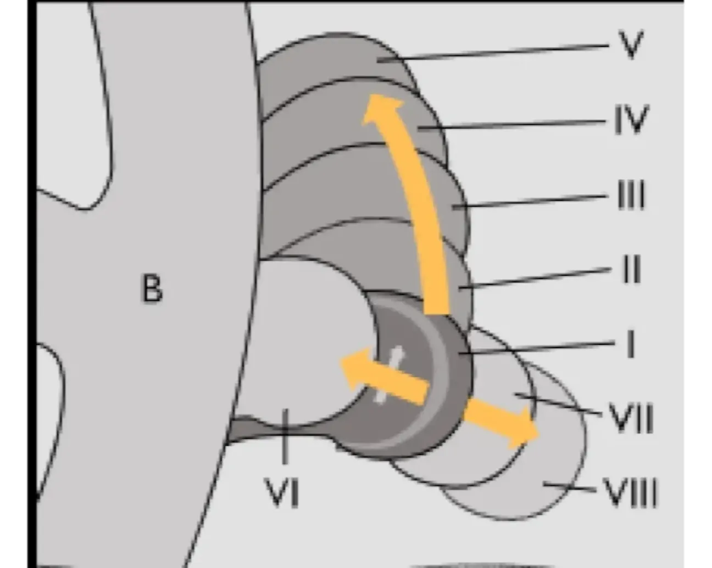

ОПИСАНИЕ АВТОМОБИЛЯ — II. Органы управления и приборы
Подрулевые переключатели
поворотникидальний светдворникиомывательочиститель
При включенном зажигании положения рычага переключателя указателей поворота и света фар (рис. 21) означают:

| Положение | Назначение |
|---|---|
| I | Указатели поворота выключены; включён ближний свет фар, если включено наружное освещение. |
| II | Включены указатели левого поворота, нефиксированное положение. |
| III | Включены указатели левого поворота, фиксированное положение. |
| IV | Включены указатели правого поворота, нефиксированное положение. |
| V | Включены указатели правого поворота, фиксированное положение. |
| VI | На себя — включён дальний свет фар независимо от положения переключателя наружного освещения, нефиксированное положение. |
| VII | От себя — включён дальний свет фар, если переключателем наружного освещения поставлены под напряжение фары, фиксированное положение. |
Рычаг переключателя очистителей и омывателей стёкол при включенном зажигании занимает следующие положения:

| Положение | Назначение |
|---|---|
| I | Очистители и омыватели стёкол выключены. |
| II | Включён прерывистый режим работы очистителя ветрового стекла, нефиксированное положение. |
| III | Включён прерывистый режим работы очистителя ветрового стекла, фиксированное положение. |
| IV | Включена малая скорость очистителя ветрового стекла. |
| V | Включена большая скорость очистителя ветрового стекла. |
| VI | На себя — включён омыватель ветрового стекла, нефиксированное положение. |
| VII | Включён очиститель заднего стекла, фиксированное положение. |
| VIII | Дополнительно включается омыватель заднего стекла, нефиксированное положение. |